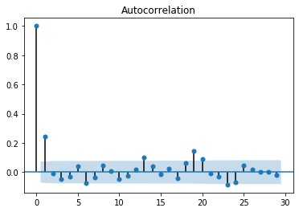
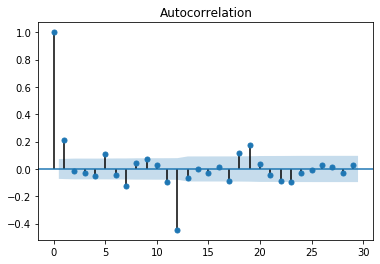
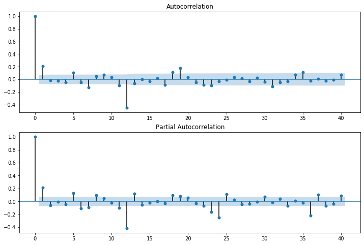

Stock Market Analysis of the S&P 500 Index using ARIMA and Seasonal ARIMA for forecasting¶
This post includes code and notes from python for finance and trading algorithms udemy course and python for finance and trading algorithms udemy course notebooks.
import pandas as pd
import numpy as np
import matplotlib.pyplot as plt
%matplotlib inline
import pandas_datareader
import datetime
import pandas_datareader.data as web
import statsmodels.api as sm
import quandl
start = datetime.datetime(1960, 1, 1)
end = pd.to_datetime('today')
SP500 = quandl.get("MULTPL/SP500_REAL_PRICE_MONTH",start_date = start,end_date = end)
SP500
| Value | |
|---|---|
| Date | |
| 1960-01-01 | 58.03 |
| 1960-02-01 | 55.78 |
| 1960-03-01 | 55.02 |
| 1960-04-01 | 55.73 |
| 1960-05-01 | 55.22 |
| ... | ... |
| 2020-08-01 | 3391.71 |
| 2020-08-31 | 3500.31 |
| 2020-09-01 | 3526.65 |
| 2020-09-30 | 3363.00 |
| 2020-10-01 | 3380.80 |
740 rows × 1 columns
df = SP500
df.head()
| Value | |
|---|---|
| Date | |
| 1960-01-01 | 58.03 |
| 1960-02-01 | 55.78 |
| 1960-03-01 | 55.02 |
| 1960-04-01 | 55.73 |
| 1960-05-01 | 55.22 |
df.tail()
| Value | |
|---|---|
| Date | |
| 2020-08-01 | 3391.71 |
| 2020-08-31 | 3500.31 |
| 2020-09-01 | 3526.65 |
| 2020-09-30 | 3363.00 |
| 2020-10-01 | 3380.80 |
df.columns = ['Value']
df.head()
| Value | |
|---|---|
| Date | |
| 1960-01-01 | 58.03 |
| 1960-02-01 | 55.78 |
| 1960-03-01 | 55.02 |
| 1960-04-01 | 55.73 |
| 1960-05-01 | 55.22 |
df.head()
| Value | |
|---|---|
| Date | |
| 1960-01-01 | 58.03 |
| 1960-02-01 | 55.78 |
| 1960-03-01 | 55.02 |
| 1960-04-01 | 55.73 |
| 1960-05-01 | 55.22 |
df.describe().transpose()
| count | mean | std | min | 25% | 50% | 75% | max | |
|---|---|---|---|---|---|---|---|---|
| Value | 740.0 | 761.732932 | 834.566138 | 53.73 | 100.9 | 349.425 | 1239.415 | 3526.65 |
Step 2: Visualize the Data¶
Let’s visualize this data with a few methods.
df.plot()
<matplotlib.axes._subplots.AxesSubplot at 0x7f8873251b38>
timeseries = df['Value']
timeseries.rolling(12).mean().plot(label='12 Month Rolling Mean')
timeseries.rolling(12).std().plot(label='12 Month Rolling Std')
timeseries.plot()
plt.legend()
<matplotlib.legend.Legend at 0x7f88731e22e8>
timeseries.rolling(12).mean().plot(label='12 Month Rolling Mean')
timeseries.plot()
plt.legend()
<matplotlib.legend.Legend at 0x7f887315f630>

Decomposition¶
ETS decomposition allows us to see the individual parts!
from statsmodels.tsa.seasonal import seasonal_decompose
decomposition = seasonal_decompose(df['Value'], freq=12)
fig = plt.figure()
fig = decomposition.plot()
fig.set_size_inches(15, 8)
<Figure size 432x288 with 0 Axes>
Testing for Stationarity¶
df.head()
| Value | |
|---|---|
| Date | |
| 1960-01-01 | 58.03 |
| 1960-02-01 | 55.78 |
| 1960-03-01 | 55.02 |
| 1960-04-01 | 55.73 |
| 1960-05-01 | 55.22 |
from statsmodels.tsa.stattools import adfuller
result = adfuller(df['Value'])
print('Augmented Dickey-Fuller Test:')
labels = ['ADF Test Statistic','p-value','#Lags Used','Number of Observations Used']
for value,label in zip(result,labels):
print(label+' : '+str(value) )
if result[1] <= 0.05:
print("strong evidence against the null hypothesis, reject the null hypothesis. Data has no unit root and is stationary")
else:
print("weak evidence against null hypothesis, time series has a unit root, indicating it is non-stationary ")
Augmented Dickey-Fuller Test:
ADF Test Statistic : 1.7247353245135
p-value : 0.9981874531215522
#Lags Used : 20
Number of Observations Used : 719
weak evidence against null hypothesis, time series has a unit root, indicating it is non-stationary
def adf_check(time_series):
"""
Pass in a time series, returns ADF report
"""
result = adfuller(time_series)
print('Augmented Dickey-Fuller Test:')
labels = ['ADF Test Statistic','p-value','#Lags Used','Number of Observations Used']
for value,label in zip(result,labels):
print(label+' : '+str(value) )
if result[1] <= 0.05:
print("strong evidence against the null hypothesis, reject the null hypothesis. Data has no unit root and is stationary")
else:
print("weak evidence against null hypothesis, time series has a unit root, indicating it is non-stationary ")
** First Difference **
df['Value First Difference'] = df['Value'] - df['Value'].shift(1)
adf_check(df['Value First Difference'].dropna())
Augmented Dickey-Fuller Test:
ADF Test Statistic : -4.267790128581322
p-value : 0.0005048563860225925
#Lags Used : 20
Number of Observations Used : 718
strong evidence against the null hypothesis, reject the null hypothesis. Data has no unit root and is stationary
df['Value First Difference'].plot()
<matplotlib.axes._subplots.AxesSubplot at 0x7f886d63feb8>

** Second Difference **
df['Value Second Difference'] = df['Value First Difference'] - df['Value First Difference'].shift(1)
adf_check(df['Value Second Difference'].dropna())
Augmented Dickey-Fuller Test:
ADF Test Statistic : -12.29955077642857
p-value : 7.504260735615441e-23
#Lags Used : 18
Number of Observations Used : 719
strong evidence against the null hypothesis, reject the null hypothesis. Data has no unit root and is stationary
df['Value Second Difference'].plot()
<matplotlib.axes._subplots.AxesSubplot at 0x7f8877f726d8>
** Seasonal Difference **
df['Seasonal Difference'] = df['Value'] - df['Value'].shift(12)
df['Seasonal Difference'].plot()
<matplotlib.axes._subplots.AxesSubplot at 0x7f8877fb79e8>
adf_check(df['Seasonal Difference'].dropna())
Augmented Dickey-Fuller Test:
ADF Test Statistic : -5.239903673260254
p-value : 7.284266188346342e-06
#Lags Used : 20
Number of Observations Used : 707
strong evidence against the null hypothesis, reject the null hypothesis. Data has no unit root and is stationary
** Seasonal First Difference **
df['Seasonal First Difference'] = df['Value First Difference'] - df['Value First Difference'].shift(12)
df['Seasonal First Difference'].plot()
<matplotlib.axes._subplots.AxesSubplot at 0x7f88acb0c2b0>
adf_check(df['Seasonal First Difference'].dropna())
Augmented Dickey-Fuller Test:
ADF Test Statistic : -6.196739887980032
p-value : 5.940155101037563e-08
#Lags Used : 20
Number of Observations Used : 706
strong evidence against the null hypothesis, reject the null hypothesis. Data has no unit root and is stationary
from statsmodels.graphics.tsaplots import plot_acf,plot_pacf
# Check out: https://stackoverflow.com/questions/21788593/statsmodels-duplicate-charts
# https://github.com/statsmodels/statsmodels/issues/1265
fig_first = plot_acf(df["Value First Difference"].dropna())

fig_seasonal_first = plot_acf(df["Seasonal First Difference"].dropna())

Pandas also has this functionality built in, but only for ACF, not PACF. So I recommend using statsmodels, as ACF and PACF is more core to its functionality than it is to pandas’ functionality.
from pandas.plotting import autocorrelation_plot
autocorrelation_plot(df['Seasonal First Difference'].dropna())
<matplotlib.axes._subplots.AxesSubplot at 0x7f886d660358>

We can then plot this relationship:
result = plot_pacf(df["Seasonal First Difference"].dropna())

fig = plt.figure(figsize=(12,8))
ax1 = fig.add_subplot(211)
fig = sm.graphics.tsa.plot_acf(df['Seasonal First Difference'].iloc[13:], lags=40, ax=ax1)
ax2 = fig.add_subplot(212)
fig = sm.graphics.tsa.plot_pacf(df['Seasonal First Difference'].iloc[13:], lags=40, ax=ax2)

from statsmodels.tsa.arima_model import ARIMA
help(ARIMA)
Help on class ARIMA in module statsmodels.tsa.arima_model:
class ARIMA(ARMA)
| ARIMA(endog, order, exog=None, dates=None, freq=None, missing='none')
|
| Autoregressive Integrated Moving Average ARIMA(p,d,q) Model
|
| Parameters
| ----------
| endog : array-like
| The endogenous variable.
| order : iterable
| The (p,d,q) order of the model for the number of AR parameters,
| differences, and MA parameters to use.
| exog : array-like, optional
| An optional array of exogenous variables. This should *not* include a
| constant or trend. You can specify this in the `fit` method.
| dates : array-like of datetime, optional
| An array-like object of datetime objects. If a pandas object is given
| for endog or exog, it is assumed to have a DateIndex.
| freq : str, optional
| The frequency of the time-series. A Pandas offset or 'B', 'D', 'W',
| 'M', 'A', or 'Q'. This is optional if dates are given.
|
|
| Notes
| -----
| If exogenous variables are given, then the model that is fit is
|
| .. math::
|
| \phi(L)(y_t - X_t\beta) = \theta(L)\epsilon_t
|
| where :math:`\phi` and :math:`\theta` are polynomials in the lag
| operator, :math:`L`. This is the regression model with ARMA errors,
| or ARMAX model. This specification is used, whether or not the model
| is fit using conditional sum of square or maximum-likelihood, using
| the `method` argument in
| :meth:`statsmodels.tsa.arima_model.ARIMA.fit`. Therefore, for
| now, `css` and `mle` refer to estimation methods only. This may
| change for the case of the `css` model in future versions.
|
| Method resolution order:
| ARIMA
| ARMA
| statsmodels.tsa.base.tsa_model.TimeSeriesModel
| statsmodels.base.model.LikelihoodModel
| statsmodels.base.model.Model
| builtins.object
|
| Methods defined here:
|
| __getnewargs__(self)
|
| __init__(self, endog, order, exog=None, dates=None, freq=None, missing='none')
| Initialize self. See help(type(self)) for accurate signature.
|
| fit(self, start_params=None, trend='c', method='css-mle', transparams=True, solver='lbfgs', maxiter=500, full_output=1, disp=5, callback=None, start_ar_lags=None, **kwargs)
| Fits ARIMA(p,d,q) model by exact maximum likelihood via Kalman filter.
|
| Parameters
| ----------
| start_params : array-like, optional
| Starting parameters for ARMA(p,q). If None, the default is given
| by ARMA._fit_start_params. See there for more information.
| transparams : bool, optional
| Whehter or not to transform the parameters to ensure stationarity.
| Uses the transformation suggested in Jones (1980). If False,
| no checking for stationarity or invertibility is done.
| method : str {'css-mle','mle','css'}
| This is the loglikelihood to maximize. If "css-mle", the
| conditional sum of squares likelihood is maximized and its values
| are used as starting values for the computation of the exact
| likelihood via the Kalman filter. If "mle", the exact likelihood
| is maximized via the Kalman Filter. If "css" the conditional sum
| of squares likelihood is maximized. All three methods use
| `start_params` as starting parameters. See above for more
| information.
| trend : str {'c','nc'}
| Whether to include a constant or not. 'c' includes constant,
| 'nc' no constant.
| solver : str or None, optional
| Solver to be used. The default is 'lbfgs' (limited memory
| Broyden-Fletcher-Goldfarb-Shanno). Other choices are 'bfgs',
| 'newton' (Newton-Raphson), 'nm' (Nelder-Mead), 'cg' -
| (conjugate gradient), 'ncg' (non-conjugate gradient), and
| 'powell'. By default, the limited memory BFGS uses m=12 to
| approximate the Hessian, projected gradient tolerance of 1e-8 and
| factr = 1e2. You can change these by using kwargs.
| maxiter : int, optional
| The maximum number of function evaluations. Default is 500.
| tol : float
| The convergence tolerance. Default is 1e-08.
| full_output : bool, optional
| If True, all output from solver will be available in
| the Results object's mle_retvals attribute. Output is dependent
| on the solver. See Notes for more information.
| disp : int, optional
| If True, convergence information is printed. For the default
| l_bfgs_b solver, disp controls the frequency of the output during
| the iterations. disp < 0 means no output in this case.
| callback : function, optional
| Called after each iteration as callback(xk) where xk is the current
| parameter vector.
| start_ar_lags : int, optional
| Parameter for fitting start_params. When fitting start_params,
| residuals are obtained from an AR fit, then an ARMA(p,q) model is
| fit via OLS using these residuals. If start_ar_lags is None, fit
| an AR process according to best BIC. If start_ar_lags is not None,
| fits an AR process with a lag length equal to start_ar_lags.
| See ARMA._fit_start_params_hr for more information.
| kwargs
| See Notes for keyword arguments that can be passed to fit.
|
| Returns
| -------
| `statsmodels.tsa.arima.ARIMAResults` class
|
| See Also
| --------
| statsmodels.base.model.LikelihoodModel.fit : for more information
| on using the solvers.
| ARIMAResults : results class returned by fit
|
| Notes
| -----
| If fit by 'mle', it is assumed for the Kalman Filter that the initial
| unknown state is zero, and that the initial variance is
| P = dot(inv(identity(m**2)-kron(T,T)),dot(R,R.T).ravel('F')).reshape(r,
| r, order = 'F')
|
| predict(self, params, start=None, end=None, exog=None, typ='linear', dynamic=False)
| ARIMA model in-sample and out-of-sample prediction
|
| Parameters
| ----------
| params : array-like
| The fitted parameters of the model.
| start : int, str, or datetime
| Zero-indexed observation number at which to start forecasting, ie.,
| the first forecast is start. Can also be a date string to
| parse or a datetime type.
| end : int, str, or datetime
| Zero-indexed observation number at which to end forecasting, ie.,
| the first forecast is start. Can also be a date string to
| parse or a datetime type. However, if the dates index does not
| have a fixed frequency, end must be an integer index if you
| want out of sample prediction.
| exog : array-like, optional
| If the model is an ARMAX and out-of-sample forecasting is
| requested, exog must be given. Note that you'll need to pass
| `k_ar` additional lags for any exogenous variables. E.g., if you
| fit an ARMAX(2, q) model and want to predict 5 steps, you need 7
| observations to do this.
| dynamic : bool, optional
| The `dynamic` keyword affects in-sample prediction. If dynamic
| is False, then the in-sample lagged values are used for
| prediction. If `dynamic` is True, then in-sample forecasts are
| used in place of lagged dependent variables. The first forecasted
| value is `start`.
| typ : str {'linear', 'levels'}
|
| - 'linear' : Linear prediction in terms of the differenced
| endogenous variables.
| - 'levels' : Predict the levels of the original endogenous
| variables.
|
|
| Returns
| -------
| predict : array
| The predicted values.
|
|
|
| Notes
| -----
| Use the results predict method instead.
|
| ----------------------------------------------------------------------
| Static methods defined here:
|
| __new__(cls, endog, order, exog=None, dates=None, freq=None, missing='none')
| Create and return a new object. See help(type) for accurate signature.
|
| ----------------------------------------------------------------------
| Methods inherited from ARMA:
|
| geterrors(self, params)
| Get the errors of the ARMA process.
|
| Parameters
| ----------
| params : array-like
| The fitted ARMA parameters
| order : array-like
| 3 item iterable, with the number of AR, MA, and exogenous
| parameters, including the trend
|
| hessian(self, params)
| Compute the Hessian at params,
|
| Notes
| -----
| This is a numerical approximation.
|
| loglike(self, params, set_sigma2=True)
| Compute the log-likelihood for ARMA(p,q) model
|
| Notes
| -----
| Likelihood used depends on the method set in fit
|
| loglike_css(self, params, set_sigma2=True)
| Conditional Sum of Squares likelihood function.
|
| loglike_kalman(self, params, set_sigma2=True)
| Compute exact loglikelihood for ARMA(p,q) model by the Kalman Filter.
|
| score(self, params)
| Compute the score function at params.
|
| Notes
| -----
| This is a numerical approximation.
|
| ----------------------------------------------------------------------
| Class methods inherited from ARMA:
|
| from_formula(formula, data, subset=None, drop_cols=None, *args, **kwargs) from builtins.type
| Create a Model from a formula and dataframe.
|
| Parameters
| ----------
| formula : str or generic Formula object
| The formula specifying the model
| data : array-like
| The data for the model. See Notes.
| subset : array-like
| An array-like object of booleans, integers, or index values that
| indicate the subset of df to use in the model. Assumes df is a
| `pandas.DataFrame`
| drop_cols : array-like
| Columns to drop from the design matrix. Cannot be used to
| drop terms involving categoricals.
| args : extra arguments
| These are passed to the model
| kwargs : extra keyword arguments
| These are passed to the model with one exception. The
| ``eval_env`` keyword is passed to patsy. It can be either a
| :class:`patsy:patsy.EvalEnvironment` object or an integer
| indicating the depth of the namespace to use. For example, the
| default ``eval_env=0`` uses the calling namespace. If you wish
| to use a "clean" environment set ``eval_env=-1``.
|
| Returns
| -------
| model : Model instance
|
| Notes
| -----
| data must define __getitem__ with the keys in the formula terms
| args and kwargs are passed on to the model instantiation. E.g.,
| a numpy structured or rec array, a dictionary, or a pandas DataFrame.
|
| ----------------------------------------------------------------------
| Data descriptors inherited from statsmodels.tsa.base.tsa_model.TimeSeriesModel:
|
| exog_names
|
| ----------------------------------------------------------------------
| Methods inherited from statsmodels.base.model.LikelihoodModel:
|
| information(self, params)
| Fisher information matrix of model
|
| Returns -Hessian of loglike evaluated at params.
|
| initialize(self)
| Initialize (possibly re-initialize) a Model instance. For
| instance, the design matrix of a linear model may change
| and some things must be recomputed.
|
| ----------------------------------------------------------------------
| Data descriptors inherited from statsmodels.base.model.Model:
|
| __dict__
| dictionary for instance variables (if defined)
|
| __weakref__
| list of weak references to the object (if defined)
|
| endog_names
| Names of endogenous variables
model = sm.tsa.statespace.SARIMAX(df['Value'],order=(0,1,0), seasonal_order=(1,1,1,12))
results = model.fit()
print(results.summary())
/home/gao/anaconda3/lib/python3.7/site-packages/statsmodels/tsa/base/tsa_model.py:219: ValueWarning: A date index has been provided, but it has no associated frequency information and so will be ignored when e.g. forecasting.
' ignored when e.g. forecasting.', ValueWarning)
Statespace Model Results
==========================================================================================
Dep. Variable: Value No. Observations: 740
Model: SARIMAX(0, 1, 0)x(1, 1, 1, 12) Log Likelihood -3719.108
Date: Fri, 23 Oct 2020 AIC 7444.215
Time: 09:03:22 BIC 7457.982
Sample: 0 HQIC 7449.528
- 740
Covariance Type: opg
==============================================================================
coef std err z P>|z| [0.025 0.975]
------------------------------------------------------------------------------
ar.S.L12 0.0043 0.021 0.201 0.840 -0.037 0.046
ma.S.L12 -0.9513 0.018 -53.297 0.000 -0.986 -0.916
sigma2 1563.8216 30.663 51.001 0.000 1503.724 1623.919
===================================================================================
Ljung-Box (Q): 116.83 Jarque-Bera (JB): 9251.13
Prob(Q): 0.00 Prob(JB): 0.00
Heteroskedasticity (H): 410.23 Skew: -1.86
Prob(H) (two-sided): 0.00 Kurtosis: 20.08
===================================================================================
Warnings:
[1] Covariance matrix calculated using the outer product of gradients (complex-step).
results.resid.plot()
<matplotlib.axes._subplots.AxesSubplot at 0x7f8872daf940>

results.resid.plot(kind='kde')
<matplotlib.axes._subplots.AxesSubplot at 0x7f8872d863c8>

Prediction of Future Values¶
Firts we can get an idea of how well our model performs by just predicting for values that we actually already know:
df['forecast'] = results.predict(start = 1, end= 720, dynamic= True)
df[['Value','forecast']].plot(figsize=(12,8))
<matplotlib.axes._subplots.AxesSubplot at 0x7f88ace0d7b8>
Forecasting¶
df.tail()
| Value | Value First Difference | Value Second Difference | Seasonal Difference | Seasonal First Difference | forecast | |
|---|---|---|---|---|---|---|
| Date | ||||||
| 2020-08-01 | 3391.71 | 120.59 | 57.09 | 166.67 | 173.75 | NaN |
| 2020-08-31 | 3500.31 | 108.60 | -11.99 | 223.00 | 56.33 | NaN |
| 2020-09-01 | 3526.65 | 26.34 | -82.26 | 571.84 | 348.84 | NaN |
| 2020-09-30 | 3363.00 | -163.65 | -189.99 | 710.61 | 138.77 | NaN |
| 2020-10-01 | 3380.80 | 17.80 | 181.45 | 796.21 | 85.60 | NaN |
from pandas.tseries.offsets import DateOffset
future_dates = [df.index[-1] + DateOffset(months=x) for x in range(0,24) ]
future_dates
[Timestamp('2020-10-01 00:00:00'),
Timestamp('2020-11-01 00:00:00'),
Timestamp('2020-12-01 00:00:00'),
Timestamp('2021-01-01 00:00:00'),
Timestamp('2021-02-01 00:00:00'),
Timestamp('2021-03-01 00:00:00'),
Timestamp('2021-04-01 00:00:00'),
Timestamp('2021-05-01 00:00:00'),
Timestamp('2021-06-01 00:00:00'),
Timestamp('2021-07-01 00:00:00'),
Timestamp('2021-08-01 00:00:00'),
Timestamp('2021-09-01 00:00:00'),
Timestamp('2021-10-01 00:00:00'),
Timestamp('2021-11-01 00:00:00'),
Timestamp('2021-12-01 00:00:00'),
Timestamp('2022-01-01 00:00:00'),
Timestamp('2022-02-01 00:00:00'),
Timestamp('2022-03-01 00:00:00'),
Timestamp('2022-04-01 00:00:00'),
Timestamp('2022-05-01 00:00:00'),
Timestamp('2022-06-01 00:00:00'),
Timestamp('2022-07-01 00:00:00'),
Timestamp('2022-08-01 00:00:00'),
Timestamp('2022-09-01 00:00:00')]
future_dates_df = pd.DataFrame(index=future_dates[1:],columns=df.columns)
future_df = pd.concat([df,future_dates_df])
future_df.head()
| Value | Value First Difference | Value Second Difference | Seasonal Difference | Seasonal First Difference | forecast | |
|---|---|---|---|---|---|---|
| 1960-01-01 | 58.03 | NaN | NaN | NaN | NaN | NaN |
| 1960-02-01 | 55.78 | -2.25 | NaN | NaN | NaN | 58.03 |
| 1960-03-01 | 55.02 | -0.76 | 1.49 | NaN | NaN | 58.03 |
| 1960-04-01 | 55.73 | 0.71 | 1.47 | NaN | NaN | 58.03 |
| 1960-05-01 | 55.22 | -0.51 | -1.22 | NaN | NaN | 58.03 |
future_df.tail()
| Value | Value First Difference | Value Second Difference | Seasonal Difference | Seasonal First Difference | forecast | |
|---|---|---|---|---|---|---|
| 2022-05-01 | NaN | NaN | NaN | NaN | NaN | NaN |
| 2022-06-01 | NaN | NaN | NaN | NaN | NaN | NaN |
| 2022-07-01 | NaN | NaN | NaN | NaN | NaN | NaN |
| 2022-08-01 | NaN | NaN | NaN | NaN | NaN | NaN |
| 2022-09-01 | NaN | NaN | NaN | NaN | NaN | NaN |
future_df['forecast'] = results.predict(start = 1, end = 720, dynamic= True)
future_df[['Value', 'forecast']].plot(figsize=(12, 8))
<matplotlib.axes._subplots.AxesSubplot at 0x7f8872997fd0>